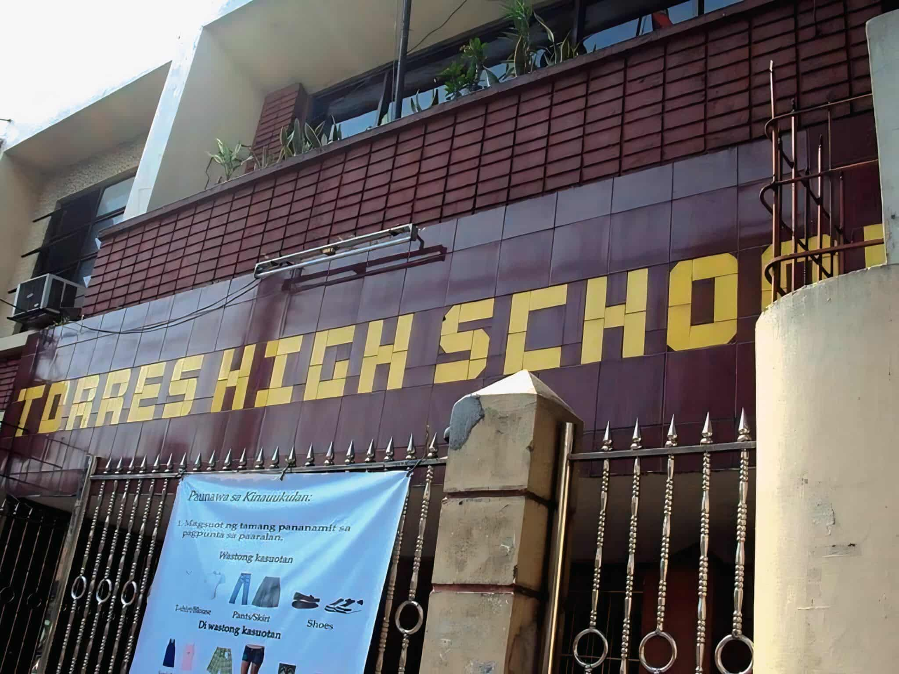

Academic Background

Technological University of the Philippines
Bachelor of Science in Information System
SY: 2021 - 2025
Honors & Awards:
Dean's Lister (4th year 1st Semesters)
Dean's Lister (3rd year 2nd Semesters)
President's Lister (3rd year 1st Semesters)
Dean's Lister (3rd year 2nd Semesters)
Dean's Lister (2nd year 2nd Semesters)
Dean's Lister (2nd year 1st Semesters)
Florentino Senior High School (MTVES)
TVL-ICT Strand
SY: 2017 - 2019
Honors & Awards:
NCII Passer (grade12)
With Honors (grade12)
With Honors (grade11)
Cultural Cooking Contest 2nd Place 2019
Vlog Making Contest Champion 2018
buwan ng Wika Pag Sayaw Champion 2018

Florentino Torres High School
Junior High School
SY: 2014 - 2016
Honors & Awards:
Library Club Member